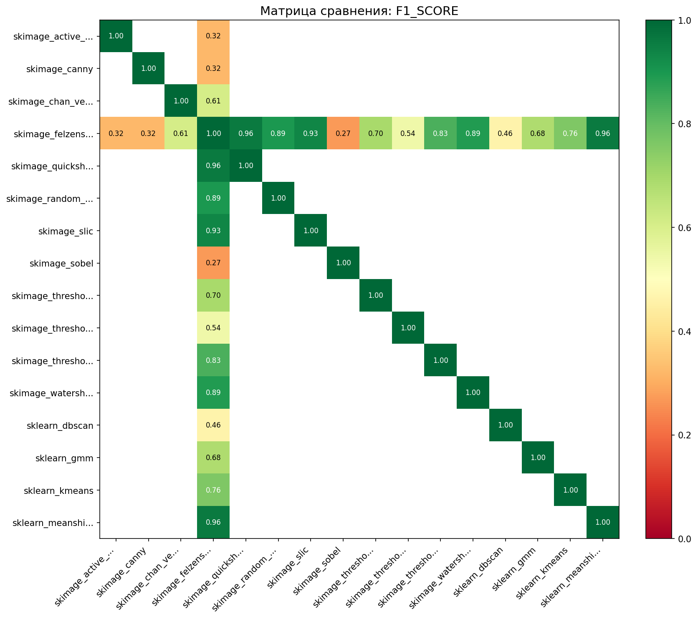
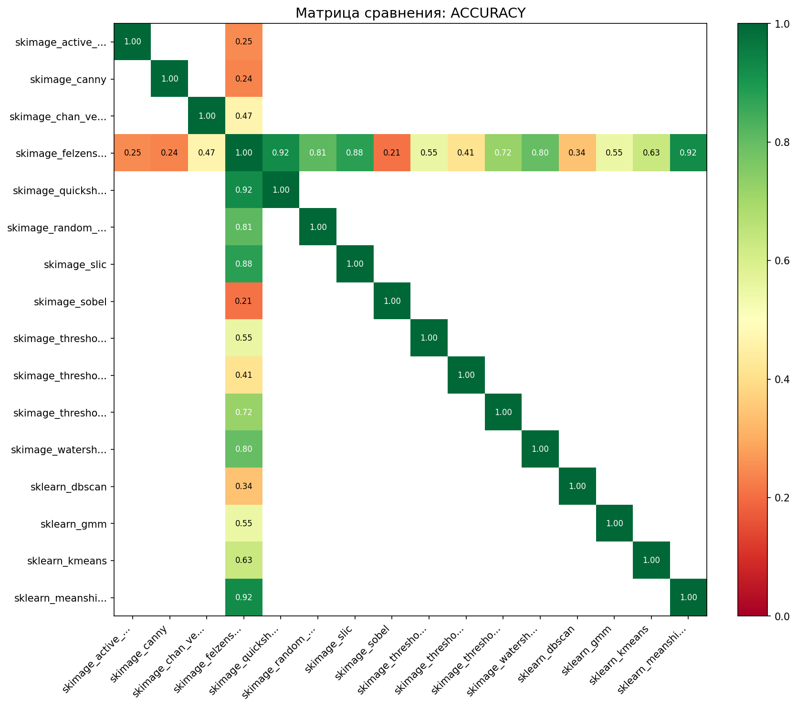
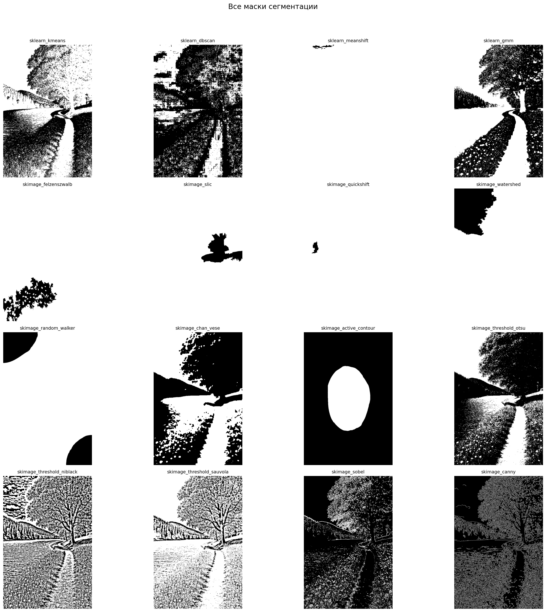

Дата: 2025-12-24 13:13:24
Всего методов: 16
Тип сравнения: all_vs_ref
Референсный метод: skimage_felzenszwalb



| method2 | f1_score |
|---|---|
| sklearn_meanshift | 0.960 |
| skimage_quickshift | 0.959 |
| skimage_slic | 0.934 |
| skimage_random_walker | 0.895 |
| skimage_watershed | 0.888 |
| Метод | Площадь маски | Покрытие | Время (с) |
|---|---|---|---|
| sklearn_meanshift | 612,812 | 99.7% | 19.639 |
| skimage_quickshift | 612,201 | 99.6% | 2.194 |
| skimage_slic | 584,573 | 95.1% | 0.336 |
| skimage_felzenszwalb | 568,663 | 92.6% | 0.457 |
| skimage_random_walker | 543,330 | 88.4% | 5.864 |
| skimage_watershed | 536,630 | 87.3% | 0.161 |
| skimage_threshold_sauvola | 458,625 | 74.6% | 0.015 |
| sklearn_kmeans | 372,026 | 60.6% | 0.237 |
| skimage_threshold_niblack | 335,320 | 54.6% | 0.016 |
| sklearn_gmm | 301,953 | 49.1% | 2.369 |
| skimage_chan_vese | 265,152 | 43.2% | 2.430 |
| skimage_threshold_otsu | 221,612 | 36.1% | 0.002 |
| sklearn_dbscan | 182,736 | 29.7% | 0.517 |
| skimage_canny | 125,383 | 20.4% | 0.032 |
| skimage_active_contour | 113,010 | 18.4% | 0.236 |
| skimage_sobel | 99,289 | 16.2% | 0.007 |